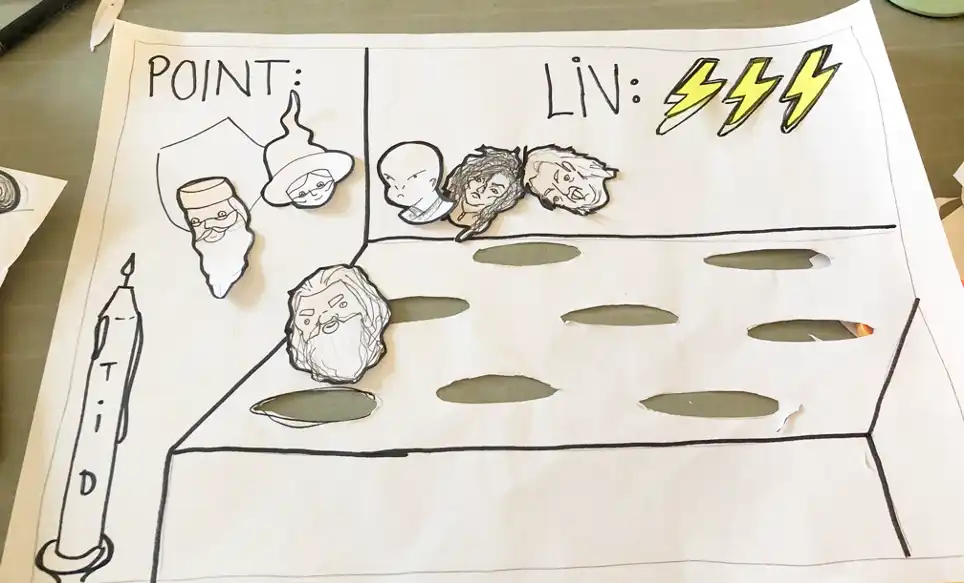

TEMA 4: Grundlæggende animation
Denne gang blev vi introduceret for et nyt kodningssprog, nemlig
javascript. Måden hvorpå vi lærte at anvende det, var ved at kode et
spil i både html, css og javascript.
For at kunne lave et spil, krævede det at jeg designede mine
egne spilkarakterer og udviklede en historie. Dette gjorde jeg
gennem forskellige idégenerering- og skitseringsmetoder. Mine
skitser overføres til illustrator, hvor jeg modullerede ovenpå og
tegnede dem færdige.
Jeg lærte om fordelene ved vector frem for pixels, hvor
kvaliteten ikke forandres ved skalering. Af samme grund eksporteres
elementerne som .SVG-filer (Scalable Vector Graphics).
Vi blev desuden introduceret til Adobe Audition, idét vi skulle have
lyde med i vores spil. Når lydene var udarbejdede og finpudset i
Audition, skulle de indlejres i HTML, samt kodes i Javascript, så de
passede til spillet.
04.05.03 temaopgave
Spil-idé
Jeg lavede et whack-a-mole-spil i denne opgave. Efter
idégeneringen bl.a. gennem metoden, hvor man tegnede streger mlm.
3 ord og fandt på en historie, valgte jeg temaet Harry Potter.
Metoden bidrog til at finde på min egen historie indenfor dette
tema.
Mine visioner for spillet gjorde det en anelse kompliceret for mig
selv, idét det krævede ekstra javascript. Det viste sig dog, at
det kunne jeg godt, og min vision om, at timeren var et brændende
stearinlys, lykkedes.
Spillet blev efterfølgende
testet, men denne proces kiksede lidt, og jeg fik kun 3
tilbagevendinger på spillet. Den feedback jeg fik, var dog
særdeles relevant.
Skitser
Proces
Uddrag fra Assetlisten


Aktivitetsdiagram og statemachinediagram
Lyde
Dette spil krævede som sagt også nogle selvgjorte lyde, som
ligeledes skulle indlejres i spillet.
Jeg optog og redigerede
6 lyde til mit spil;